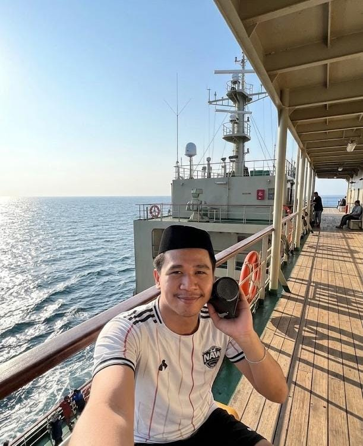

150+ Pemuda
12 Kegiatan
7 Dusun
Aktif UMKM

Ketua Karang Taruna Desa Timbuseng
Karang Taruna "Maju Bersama" Desa Timbuseng
"Pemuda bukan hanya penonton perubahan, melainkan motor penggerak utama dalam pembangunan desa. Melalui wadah Karang Taruna Desa Timbuseng, kami bertekad merajut potensi pemuda di 7 dusun untuk berinovasi, berwirausaha, dan melestarikan nilai gotong royong."
— Sambutan Ketua Karang Taruna Desa TimbusengVisi & Misi Karang Taruna
Visi Utama
Mewujudkan generasi muda Desa Timbuseng yang mandiri, berkarakter mulia, berjiwa wirausaha digital, serta aktif menjaga keharmonisan sosial dan pembangunan desa.
Misi Pemberdayaan
- Menumbuhkan minat kewirausahaan muda dan UMKM kreatif berbasis potensi lokal.
- Mengembangkan bakat olahraga, seni, dan kebudayaan pemuda desa.
- Penyelenggaraan pelatihan literasi digital dan teknologi tepat guna.
Misi Kemasyarakatan
- Menjadi mitra strategis Pemerintah Desa Timbuseng dalam pembangunan.
- Menggalang solidaritas sosial dan aksi tanggap bencana desa.
- Mempererat tali silaturahmi pemuda lintas 7 dusun.
Program Kerja Unggulan
Agenda 2026Program kerja Karang Taruna Desa Timbuseng difokuskan pada 4 pilar utama pemberdayaan masyarakat pemuda.
Turnamen Pemuda Timbuseng
Bidang OlahragaKompetisi sepak bola, voli, dan catur antar-dusun sebagai sarana mempererat silaturahmi dan penyaringan bakat atlet lokal.
Pelatihan UMKM & Digital
Bidang EkonomiPendampingan digital marketing, pengemasan produk, dan literasi keuangan untuk wirausaha muda Desa Timbuseng.
Gebyarkan Desa Hijau
Bidang LingkunganAksi penanaman pohon, gotong royong pembersihan fasilitas publik, dan edukasi pengelolaan sampah pemukiman.
Peduli Sosial & Keagamaan
Bidang SosialPenyaluran bantuan lansia, peringatan hari besar Islam, serta aksi donor darah bersama Palang Merah.
Dokumentasi & Galeri Aksi

Struktur Deputi & Bidang
Kewirausahaan & Ekonomi Kreatif
Pengembangan produk lokal dan pemasaran UMKM digital pemuda.
Olahraga, Seni & Budaya
Penyelenggaraan turnamen olahraga dan pelestarian seni tradisional.
Kerohanian & Pembinaan Moral
Peringatan hari besar keagamaan dan penguatan karakter remaja masjid.
Humas, Media & Publikasi
Pengelolaan informasi digital, dokumentasi, dan jaringan antar-lembaga.
Jaringan Kemitraan
- Pemerintah Desa Timbuseng
- BPD & PKK Desa Timbuseng
- Karang Taruna Kec. Polongbangkeng Timur
- Mahasiswa KKN UHM Posko 10
Ingin Bergabung?
Mari salurkan gagasan, karya, dan ide positifmu untuk kemajuan Desa Timbuseng. Terbuka untuk seluruh pemuda-pemudi di 7 dusun.